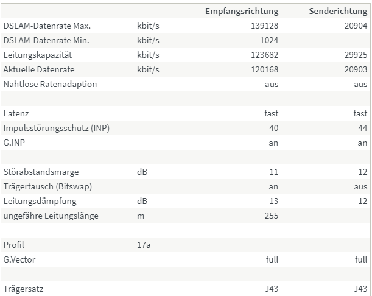

{kind=link}
Das ist aber schon bitter, wenn Glas so nahe ist und nicht aktiviert wird.

Kennst du den Grund? Was sagt A1 dazu?
Magentas Seite hat ja so eine Art von Ansicht, wo man die Netzabdeckung einsehen kann.
Angeblich soll mein Dorf ja schon 5G haben, was aber fischig klingt, da "bis zu 500 Mbit/s" dabeisteht. Echtes 5G beginnt ja grade mal bei 1GBit/s.
Mir geht es hier tatsächlich rein um den Ping. Ich brauche aufgrund von Shadow Cloud einen sehr guten Ping. Mein LTE fügt ganze 20ms hinzu, was ich bei einem Ping von mir (neben Wien) nach Wien hinein gemerkt habe. 5G soll dieses Problem ja mit unter 1ms lösen.
Sollte Magenta da lügen, würde ich dann wohl eher, falls überhaupt möglich, auf DSL zurückgreifen.
Magenta hat derzeit 5G auf 3.x Ghz (n78) und auf 2100 MHz (n1) im Einsatz.
5G ist bei Magenta (wie noch den meisten Netzbetreibern weltweit) von einer parallel bestehenden 4G Verbindung abhängig und nutzt das 4G Kernnetz mit. Dies wird sich sicher ändern, wann ist aber noch nicht bekannt.
5G auf n78 kann auch derzeit Geschwindigkeiten im Gigabit/s Bereich erreichen.
5G auf n1 hat hingegen deutlich weniger Spektrum als n78, und die Bandbreite wird zwischen 4G und 5G Nutzern geteilt (DSS), da für beide dieselbe Frequenz zur Verfügung steht.
In der Netzabdeckungskarte wird nicht zwischen n78 und n1 unterschieden.
Die maximal 500 Mbit/s rühren wohl eher davon, dass es derzeit Tarife mit maximal 500 Mbit/s derzeit gibt (bei 4G war/ist dies mit den angegebenen maximal 250 Mbit/s ebenfalls der Fall).
Wenn du einen niedrigen Ping brauchst, und eine konstante Bandbreite (was ja beides wichtig für Cloud Gaming ist) wäre DSL oder eine andere kabelgebundene Lösung sicher besser als Mobilfunk.
Magenta bietet auch DSL an (
hier die PDF mit allen Details
).
Ich empfehle diese Verfügbarkeitsabfrage, wenn es um DSL geht: https://www.telematica.at/internet/verfuegbarkeitscheck
Wähle beim Ergebnis "Für Technik-Verliebte - Alle Herstellungsdetails basierend auf Ihrem Standort" um die Tabelle mit allen möglichen Technolgien und Bandbreiten zu erhalten.
vor 14 Minuten schrieb NTM:Magenta hat derzeit 5G auf 3.x Ghz (n78) und auf 2100 MHz (n1) im Einsatz.
5G ist bei Magenta (wie noch den meisten Netzbetreibern weltweit) von einer parallel bestehenden 4G Verbindung abhängig und nutzt das 4G Kernnetz mit. Dies wird sich sicher ändern, wann ist aber noch nicht bekannt.
5G auf n78 kann auch derzeit Geschwindigkeiten im Gigabit/s Bereich erreichen.
5G auf n1 hat hingegen deutlich weniger Spektrum als n78, und die Bandbreite wird zwischen 4G und 5G Nutzern geteilt (DSS), da für beide dieselbe Frequenz zur Verfügung steht.
In der Netzabdeckungskarte wird nicht zwischen n78 und n1 unterschieden.
Die maximal 500 Mbit/s rühren wohl eher davon, dass es derzeit Tarife mit maximal 500 Mbit/s derzeit gibt (bei 4G war/ist dies mit den angegebenen maximal 250 Mbit/s ebenfalls der Fall).
Wenn du einen niedrigen Ping brauchst, und eine konstante Bandbreite (was ja beides wichtig für Cloud Gaming ist) wäre DSL oder eine andere kabelgebundene Lösung sicher besser als Mobilfunk.
Magenta bietet auch DSL an ( hier die PDF mit allen Details ).Ich empfehle diese Verfügbarkeitsabfrage, wenn es um DSL geht: https://www.telematica.at/internet/verfuegbarkeitscheck
Wähle beim Ergebnis "Für Technik-Verliebte - Alle Herstellungsdetails basierend auf Ihrem Standort" um die Tabelle mit allen möglichen Technolgien und Bandbreiten zu erhalten.
Hallo, danke für die Antwort.
Die Sache ist die, wir sind eigentlich gerade dabei bei einem anderen Anbieter DSL anzumelden, jedoch können wir das Kabel nicht finden.
Wir haben uns von A1 einen Plan zukommen lassen.
Auf diesem wird beschrieben, dass gegenüber von unserem Haus der Verteilerkasten ist (was auch stimmt) und ein Kabel zu uns hinübergehen solle.
Wir haben bei der Erde im Beet, also wo das Kabel eigentlich verlaufen sollte, runtergegraben, jedoch nur die Gasleitung gefunden.
Gibt es noch irgendwelche andere Möglichkeiten nach einem Telefonkabel zu prüfen? Unsere Postdose auf dem Dachboden ist tot (nirgends angeschlossen) was auch von einem A1 Techniker überprüft wurde.
Da unser Haus schon sehr alt ist und wir es nur renoviert haben, wissen wir nicht mehr genau, wie das früher ausgesehen hat. Jedoch sagt unsere Nachbarin dass die Vorbesitzer auf jeden Fall ein Telefon hatten.
Am 3.5.2021 um 12:37 schrieb Gamesnic:Da unser Haus schon sehr alt ist und wir es nur renoviert haben, wissen wir nicht mehr genau, wie das früher ausgesehen hat. Jedoch sagt unsere Nachbarin dass die Vorbesitzer auf jeden Fall ein Telefon hatten.
Hallo @Gamesnic ,
Wenn noch nicht abgefragt vl. hilft dir die Planbeauskunftung etwas weiter. Erfahrungsgemäß sind viele Leitung der A1 erst ab 1970-1980 elektronisch erfasst. Alles andere muss man leider suchen oder wenn möglich kann man auch eine Freileitung vom Nachbar oder einen Masten ziehen. Hätte vor 2 Jahren dafür (18 Meter) 200 Euro bezahlt.
EDIT: Darunter befinden sich meistens die Telefonleitung. Vielleicht ist sowas bei dir am Grund vergraben?
Auch eine Möglichkeit wenn nicht gerade die günstigste: NOYAFA NF816 Unterirdische Kabel-Draht-Ortungsgerät
Bearbeitet von Rexalius2000
Ich weiß nicht was mit dem Forum los ist, aber ich sehe keine Antworten.
Nichts. Nicht mal meine eigene.
EDIT: Magentacommunity hat was gegen Adblocker.
Bearbeitet von GamesnicAm 5/4/2021 um 18:01 schrieb Rexalius2000:
Hallo @Gamesnic ,
Wenn noch nicht abgefragt vl. hilft dir die Planbeauskunftung etwas weiter. Erfahrungsgemäß sind viele Leitung der A1 erst ab 1970-1980 elektronisch erfasst. Alles andere muss man leider suchen oder wenn möglich kann man auch eine Freileitung vom Nachbar oder einen Masten ziehen. Hätte vor 2 Jahren dafür (18 Meter) 200 Euro bezahlt.
EDIT: Darunter befinden sich meistens die Telefonleitung. Vielleicht ist sowas bei dir am Grund vergraben?
Auch eine Möglichkeit wenn nicht gerade die günstigste: NOYAFA NF816 Unterirdische Kabel-Draht-Ortungsgerät
Wie schon weiter oben gesagt haben wir einen Plan von A1 bekommen. Ob man eine Freileitung einfach ziehen lassen kann weiß ich ehrlich gesagt nicht.
Und nein, sowas ist nicht vergraben. So hätten wir wahrscheinlich schon längst das Kabel gefunden.
Am 8.5.2021 um 21:23 schrieb Gamesnic:Wie schon weiter oben gesagt haben wir einen Plan von A1 bekommen. Ob man eine Freileitung einfach ziehen lassen kann weiß ich ehrlich gesagt nicht.
Und nein, sowas ist nicht vergraben. So hätten wir wahrscheinlich schon längst das Kabel gefunden.
Dann wird aber auch kein Kabel da sein - bei einem alten Haus eher noch eine Freileitung aber wenn gar nichts mehr da ist, haben die das entweder rück gebaut oder es war nie was da.
Es ist überhaubt erstaunlich, das über solche alten Kupferleitungen(meine ist fast 60 Jahre alt) Internet läuft. Ich habe eine Freileitung zu mir ins Haus.
Ja das stimmt schon.
Wobei da kommt es halt auch sehr auf die Länge drauf an. Bei mir waren es vor ein paar Jahren 2,5 km und da gingen so an die 8 Mbit.
Dann kam der LWL Verteiler bis auf etwa 700 Meter zu mir - also 700 Meter ist Kupfer und jetzt gehen maximal knapp über 35 Mbit.
Was ich nicht wusste - ich hab nun VDSL2 und auch da gibt es Empfangswerte.
Also so wie RSRP und SINR. Also nix mehr Spannung, sondern mittels Trägerfrequenz und die ist auch tw. etwas sensibel.
SINR unter 6db - und das Modem verliert den Sync. Ich hab in der Regel so zwischen 10 und 15db.
Bei mir liegt die Glasfaser von A1 ca. 250 Meter entfernt. Der Ausbau wurde mit der Kanalerneuerung durchgeführt allerdings sind jetzt fast 3 Jahre vergangen und die Leitung ist immer noch nicht aktiviert. Leitungslänge zur Vermitlungsttele beträgt bei mir 1135 Meter laut Fritzbox, nur jetzt bei diesen Temperaturen ist wohl die Leitfähigkeit der Kupfefreileitung nicht mehr so gut, die Banbreite sank von 20 auf 19 MBit.
Das ist aber schon bitter, wenn Glas so nahe ist und nicht aktiviert wird.

Kennst du den Grund? Was sagt A1 dazu?
A1 kann mir nichts genaueres sagen, habe bereits öfter schon angefragt aber mit A1 ist das immer so ein Dilema
 Ich hoffe immer noch auf den Ausbau des Kabelnetz von Magenta.
Ich hoffe immer noch auf den Ausbau des Kabelnetz von Magenta.
Ja Kabel wäre fein. Aber darauf brauche ich bei mir gar nicht zu hoffen.

Schön wäre es, wenn Magenta was machen würde bei uns aber die Förderungsmillionen hat bei uns A1 kassiert und damit sind die anderen draußen... Und A1 macht jetzt auch nichts mehr...
Das Kabel von Magenta liegt ca.10 Kilometer von mir entfernt, ich würde sofort wechseln nur hat A1 als einziges bei uns derzeit eine Anbindung über Kabel. Mobiles Internet alleine ist mir zu unstabil.
10 km... Ja das ist dann auch wieder so eine Sache.
Ob da was kommt.
Aber ich glaub in Zukunft wird es noch weitere Lösungen geben.
LWL, Kabel, Mobilfunk ... das kennen wir schon.
Ein Provider aus Linz macht nun auch Richtfunk über 700 MHz mit angeblich stabilen 100 Mbit exclusiv.
Das könnte auch für andere Provider interessant werden, wenn das Graben zu teuer wird.
Wäre auch eine Option bei Magenta... Muss ich direkt mal weiter unten fragen...
So eine Art Richtfunk hatten wir auch mal von der TIWAG(Tiroler Wasserkraft AG-Energielieferant). Hat sich aber wahrscheinlich nicht wirklich bewährt da nach 2 Jahren wieder Funkstille war. Die Richtfunkantenne haben sie damals auf Strommasten montiert. so wie heute bei Mobilfunk allerdings nur viel kleiner. Für die meisten Provider ist Funk immer intressant da man sich viel erspart(Grabung etc) nur wir wissen alle wie unstabil das zur Primetime meistens laufen kann.
vor 3 Minuten schrieb Rexalius2000:So eine Art Richtfunk hatten wir auch mal von der TIWAG(Tiroler Wasserkraft AG-Energielieferant). Hat sich aber wahrscheinlich nicht wirklich bewährt da nach 2 Jahren wieder Funkstille war. Die Richtfunkantenne haben sie damals auf Strommasten montiert. so wie heute bei Mobilfunk allerdings nur viel kleiner. Für die meisten Provider ist Funk immer intressant da man sich viel erspart(Grabung etc) nur wir wissen alle wie unstabil das zur Primetime meistens laufen kann.
Nein das ist dann kein shared Medium, sondern da wird man exklusiv angehängt und wenn die max. Anzahl an Haushalten erreicht wird, wird der Masten aufgestockt.
Also dieser Provider spricht nicht von "bis zu", sondern garantiert die Bandbreite.
Soll noch im Juli in Betrieb gehen - da bin ich dann neugierig.
vor 3 Stunden schrieb Christian_E:Dann wird aber auch kein Kabel da sein - bei einem alten Haus eher noch eine Freileitung aber wenn gar nichts mehr da ist, haben die das entweder rück gebaut oder es war nie was da.
Haben ein Kabel bei unserem Carboard gefunden, dort, wo unser Nachbar mal war - dessen Haus schon seit langem weg ist. Die sind alle mit Vierteltelefonen nacheinander drangehangen.
Jedenfalls ist meine Leitung nun um Welten stabiler (die 100 gebuchten Mbps werden sogar jeden Tag übertroffen) und sogar so stabil, dass ich nun ohne Probleme Shadow verwenden kann. Die Fritz!Box sagt sogar, über diese eine alte Doppelader gingen bis zu 128Mbps!
Viertel Telefone ? Die gibt es ja seit dem Jahr 1989 nichtmehr.. Aber tolle Leitung die du jetzt da hast

vor 2 Stunden schrieb Christian_E:Ja das stimmt schon.
Wobei da kommt es halt auch sehr auf die Länge drauf an. Bei mir waren es vor ein paar Jahren 2,5 km und da gingen so an die 8 Mbit.
Dann kam der LWL Verteiler bis auf etwa 700 Meter zu mir - also 700 Meter ist Kupfer und jetzt gehen maximal knapp über 35 Mbit.
Was ich nicht wusste - ich hab nun VDSL2 und auch da gibt es Empfangswerte.
Also so wie RSRP und SINR. Also nix mehr Spannung, sondern mittels Trägerfrequenz und die ist auch tw. etwas sensibel.
SINR unter 6db - und das Modem verliert den Sync. Ich hab in der Regel so zwischen 10 und 15db.
Ich kann mich glücklich schätzen. Fritz!Box sagt mir gerade mal 247m (jetzt gerade 255m) Entferung über VDSL2, dadurch bin ich teilweise auf 5ms Ping gekommen.

vor 2 Stunden schrieb Rexalius2000:Das Kabel von Magenta liegt ca.10 Kilometer von mir entfernt, ich würde sofort wechseln nur hat A1 als einziges bei uns derzeit eine Anbindung über Kabel. Mobiles Internet alleine ist mir zu unstabil.
Ich muss sagen dass ich selbst von Hybridlösungen nichts halte. Ich kann mir nicht vorstellen dass das Modem dann auch die Leitung je nach Paketpriorität richtig routet.
vor 2 Stunden schrieb Christian_E:Nein das ist dann kein shared Medium, sondern da wird man exklusiv angehängt und wenn die max. Anzahl an Haushalten erreicht wird, wird der Masten aufgestockt.
Also dieser Provider spricht nicht von "bis zu", sondern garantiert die Bandbreite.
Soll noch im Juli in Betrieb gehen - da bin ich dann neugierig.
Das wiederum klingt ziemlich interessant. Wird der Mast über Glasfaser angehängt? Wenn ja, und deine Zelle allein für dich ist, würde ich mir doch vorstellen, dass dann auch der Ping ziemlich gut sei.
vor 3 Minuten schrieb Rexalius2000:Viertel Telefone ? Die gibt es ja seit dem Jahr 1989 nichtmehr.. Aber tolle Leitung die du jetzt da hast

Eben, dieses Haus ist ja aber auch fast schon noch ein Boomer.
Wäre bei dir Bonding möglich? Also 4 Adern ? Da müssten dann locker das doppelte der derzeitigen Bandbreite gehen.
Gerade eben schrieb Rexalius2000:Wäre bei dir Bonding möglich? Also 4 Adern ? Da müssten dann locker das doppelte der derzeitigen Bandbreite gehen.
Klar wäre es das, jedoch wäre uns das zu teuer. Für die 34 Euro im Monat reichen uns die 100Mbps.
Bonding Herstellung würde pauschal 240 Euro kosten und ein höherer Tarif ja auch.
vor 2 Stunden schrieb Gamesnic:Ich kann mich glücklich schätzen. Fritz!Box sagt mir gerade mal 247m (jetzt gerade 255m) Entferung über VDSL2, dadurch bin ich teilweise auf 5ms Ping gekommen.
Ich muss sagen dass ich selbst von Hybridlösungen nichts halte. Ich kann mir nicht vorstellen dass das Modem dann auch die Leitung je nach Paketpriorität richtig routet.
Das wiederum klingt ziemlich interessant. Wird der Mast über Glasfaser angehängt? Wenn ja, und deine Zelle allein für dich ist, würde ich mir doch vorstellen, dass dann auch der Ping ziemlich gut sei.
Ja auf die Pings bin ich auch gespannt und vor allem, wie stabil dieses Angebot ist. Mal sehen.
Ja der Masten wird mit glas versorgt.
Bearbeitet von Christian_Evor 1 Stunde schrieb Christian_E:Ja auf die Pings bin ich auch gespannt und vor allem, wie stabil dieses Angebot ist. Mal sehen.
Ja der Masten wird mit glas versorgt.
Habe es seit so 2 Wochen und bin extrem zufrieden. 0 Fritz!Box Fehler und sehr gutes Routing beim Anbieter.
{kind=link}